This chapter is intended to give an overview of the main systems in the human body, and the basic structure and function of the associated organs. The focus in each system will be to look at the main processes, the main components, and then some of the potential health issues associated with the system.
2.1 Body systems (Introduction)
Tasks
Skills
Recommendation
Activity: Research and writing about health issues
Activity: Differentiating between excretion and egestion
Comparing, identifying, describing
Optional
Summary Diagram
Summarising, describing, writing
Suggested
2.7 The nervous system (1 hour)
Tasks
Skills
Recommendation
Summary Diagram
Summarising, describing, writing
Suggested
2.8 The reproductive system (1 hour)
Tasks
Skills
Recommendation
Activity: Defining the main processes involved in reproduction
Identifying, writing
Optional
CAPS suggests that you make a large outline of the human body for this section and draw each system on to it as it is dealt with. You can do this by getting large sheets of recycled paper and tracing around one of the learners. A suggestion is to rather do one for each system and stick these up around the class.
Alternatively, provided here is a page which you can photocopy and each learner can do their own summary after each system. You can hand these out after each system and learners can do the following:
Give the diagram a heading.
Add a short description of the main purpose of the system.
List the main processes that take place in the system.
Make basic sketches in the correct places to show where the different organs and structures of the system are situated in the body.
Add labels for each of the different structures in the system.
Next to each structure's label write short bullet points to describe the function of that particular structure.
Below the diagram list some of the health issues that relate to the system.
As this chapter is meant as an overview of the different body systems, we suggest doing this for the systems which will not be discussed in detail later, namely do it for:
musculoskeletal system
excretory system
nervous system
The respiratory system also lacks an activity, so you may also wish to do a summary diagram for this section. You can also get learners to complete a summary diagram for each system as a homework exercise. But there is limited time for this chapter, and many systems to cover! The activities and summary diagrams you choose is your choice.
Following is the page to photocopy for learners to summarise a system:
How does the body do the things it does, such as breathe, move and think?
What happens when one of the systems in our bodies does not work properly and has a 'system error'?
Is it possible to prevent ourselves from getting sick?
How can you best look after your body?
The human body has been studied by artists and scientists, mechanical engineers and medical practitioners throughout history. The mechanical beauty and operation of each and every part in the human body has fascinated human beings throughout history. Be curious and get ready to be fascinated!
Leonardo da Vinci did many drawings and studies of the human body in the 1400's, such as this one called the 'Vitruvian Man.'
Body systems
integrate
If you want to check the definitions of aNew word, check the glossary at the back of this strand.
The human body consists of several integrated systems that must work together for the body to function as a whole.
In the following pages we'll study seven of the main organ systems in our bodies. At the end of each organ system you will need to make a summary of that organ system to show:
the main purpose or function of the system in the body;
the main processes that take place in the system;
the main components (organs) that make up the system; and
the main health issues that relate to that particular system.
Therefore pay close attention and make notes as you study each organ system to help you with your summary.
You could use the above criteria to draw up a large table to summarise all the organ systems as you work through them, perhaps on the one side of the board or on a large poster.
Research and writing about health issues
A suggestion is to assign different issues to different learners in your class so that you get a range of research posters to stick up. This can be done at the end of this section, but has been included here so that learners are aware of it. You may choose to use this poster and presentation for an informal assessment mark.
INSTRUCTIONS:
You are going to learn about many of the health issues related to each of the different systems. Choose one of these health issues to research.
You will need to:
Consult at least 3 different resources to find out more about that particular health issue.
Suggest ways that this health issue may be prevented (if this is possible).
Suggest treatment for the health issue in question.
Present your findings on an A3 poster as part of an oral presentation (of 3 - 4 minutes) to the class.
The digestive system
alimentary canal
carbohydrates
fats
glucose
minerals
protein
vitamins
Our cells need protein, carbohydrates, fats, vitamins and minerals to function. Yet we eat large pieces of food that are too big to pass through the selectively permeable cell membranes. So how does the food we eat eventually get to our cells in a small enough form to be absorbed?
Purpose of the digestive system
After learners have done this initial thought exercise, a fun suggestion to introduce the digestive system is to bring out a tube (either a hosepipe, or even a piece of rope, but a tube is ideal), that is 9m long to represent the digestive system. Explain to learners that the digestive system is like one long tube of different organs and this is all coiled up inside of you. Along this tube different processes occur to digest the food we eat (namely ingestion, digestion, absorption and egestion). Then explain to learners that we will be looking at what happens along this tube. You can even drape the tube up over the board in the front of the classroom for the rest of this section.
absorption
digestion
dissolve
nutrients
transport
Our digestive system is responsible for breaking down the food that we eat into small particles that can be absorbed into the bloodstream. They are then transported to the cells throughout our body.
Our digestive system is sometimes also referred to as the gastrointestinal tract, the digestive tract or alimentary canal.
The digestive system is made up of the different parts of the alimentary canal. This canal is a long, twisting pipe-like structure (about 9 meters in total) that starts at the mouth and ends at the anus. Along the way the food is broken down from chunks into molecules small enough to pass through cell membranes and supply energy to cells.
Main processes in the digestive system
egestion
ingestion
metabolic
There are four main processes that occur in the digestive system at different parts along the alimentary canal. They are:
Ingestion: This occurs when you take food into your body through your mouth by eating or drinking it.
Digestion: This is the process of breaking down large food pieces into particles that are small enough to be absorbed and pass through cell membranes.
Absorption: This is when the digested particles move into the cells of the digestive tract (they are absorbed) and move to the bloodstream from where they are carried to all the cells in the body.
Egestion: Any undigested or unwanted particles that travel through the digestive tract are later passed out as faeces. This process is known as egestion.
There is a difference between egestion and excretion. Egestion is when undigested particles are passed out as faeces. Excretion is when the body gets rid of metabolic waste formed from chemical reactions taking place in the body.
Components of the digestive system
anus
chemical digestion
faeces
fibre
saliva
small intestine
stomach
Have a look at the following diagram which gives an overview of the different parts making up the digestive system.
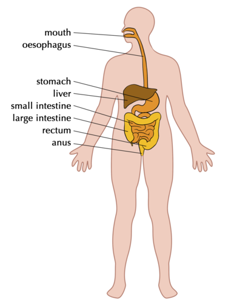
1. The mouth and oesophagus
Digestion starts in the mouth as food is chewed and mixed with saliva. It then travels down the oesophagus when you swallow.
2. Stomach
The chewed food enters the stomach and is further digested. The stomach has substances called enzymes to help digest the food. The stomach also contracts to break the food down further into a liquid.
3. Small intestine
Most of the digestion takes place in the small intestine. Absorption of the food particles also takes place in the small intestine.
4. Large intestine (or colon)
By the time the food reaches the large intestine, most of the nutrients have been absorbed. What is left is water, salts and indigestible fibre. The water that is left is absorbed in the large intestine.
Bacteria that live in the large intestine produce Vitamin K and some Vitamin B.
5. Rectum and Anus
The remaining substances (called faeces) are passed into the rectum and then out through the anus. This is called egestion.
Flow diagram of the digestive system
Flow diagrams are diagrams that show how the different sets of a process fit together in a sequence. They show the direction (flow) by using arrows. These are important tools to help you think about processes in Science.
INSTRUCTIONS:
Draw a flow diagram to represent the passage of food from the time it is taken into the body to the time it is egested from the body.
The blocks must show the main components involved in digestion, listed in order with arrows in between. Under each component include the main processes that occur at each of these stages.
The learners' flow diagrams could look something like this one below. An idea is to draw this up on the board and get learners to swap books with each other to check if they produced something similar and logical.
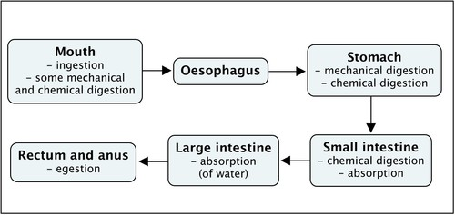
Health issues involving the digestive system
jaundice
ulcer
Common diseases of the digestive system include :
Ulcers: Sometimes open sores or ulcers develop on the lining of the mouth, oesophagus, stomach or upper portions of the small intestine. Ulcers can be very painful. They are generally caused by bacterial infections and some medications.
Anorexia nervosa: This is one of many eating disorders. People who suffer from this eating disorder have an abnormal fear of gaining weight and therefore starve themselves on purpose. This can lead to many health issues such as bone thinning, kidney damage, heart problems and even death.
Diarrhoea: Someone who passes very frequent, loose, watery stools has diarrhoea. Many diseases cause undigested food to pass through the large intestines too quickly for water to be absorbed and cause diarrhoea.
Liver cirrhosis: This disease slowly replaces healthy liver tissue with scar tissue and eventually prevents the liver from functioning properly. Alcohol abuse and fatty liver caused by obesity and diabetes are the most common causes of liver cirrhosis.
South Africa has one of the highest rates of oesophageal cancer in the world. Major risk factors for developing this cancer are alcohol consumption and smoking.
It is good to know the dangers and health consequences of an unhealthy lifestyle.
The circulatory system
blood vessels
closed blood system
network
temperature
Did you know that the blood moving throughout your body forms a system? To "circulate" means to move around, and so we have the circulatory system within the human body which transports blood.
The circulatory system includes blood as well as lymph, however at this level, only the blood circulatory system will be dealt with.
Purpose of the circulatory system
The circulatory system is responsible for transporting blood with oxygen (O2) from the lungs to cells and then transporting blood with carbon dioxide (CO2) back to the lungs. It also has to distribute nutrients from the digestive system to the cells in the body and remove waste products to be excreted.
Components of the circulatory system:
arteries
blood
capillary
deoxygenate
excrete
gaseous exchange
heart
lungs
oxygenate
veins
The circulatory system is composed of the heart and a system of blood vessels, including arteries, veins and capillaries.
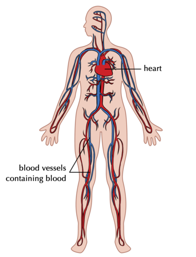The circulatory system is composed of the heart and blood vessels
1. Heart
The heart is a very strong muscle and pumps blood throughout the body. There are four chambers in the heart that receive and send blood to all parts of the body. The top two chambers are called atria (singular= atrium) and the bottom two chambers are called ventricles.
Watch a video that shows the direction of blood flow through the four chambers of the heart.
The first heart transplant in the world was done by Dr Chris Barnard in South Africa in 1967!
2. Blood vessels
There are various blood vessels which carry the blood throughout the body. These are:
arteries
capillaries
veins
3. Blood
The blood is transported throughout your body and carries various substances. The substances can be dissolved in the blood liquid (plasma), such as carbon dioxide, nutrients and waste products, or else within red blood cells, such as oxygen.
On average your heart beats about 100 000 times a day and 30 million times a year. If you live to age 70, your heart would beat an average of 2.5 billion times!
Main processes in the circulatory system
Our circulatory system is actually made up of two systems that function together:
a short system that circulates blood between the lungs and the heart; and
a much longer system that circulates blood from the heart throughout the body and back again.
This process occurs as follows:
Blood is circulated from the heart to the lungs. At the lungs, carbon dioxide (CO2) leaves the blood and oxygen (O2) enters the blood. This process is known as gaseous exchange. Since the blood now contains more oxygen than carbon dioxide, we say it is oxygenated .This oxygenated blood returns back to the heart again.
Once in the heart the oxygenated blood is then circulated to deliver the oxygen to all the cells in the body before returning back to the heart. At the same times as it delivers oxygen, the blood also collects carbon dioxide from the cells. This blood has more CO2 than O2, so it is deoxygenated blood. The carbon dioxide is excreted when it next returns to the lungs.
This process occurs over and over again throughout your life, thousands of times a day!
:Why not play one of the videos in class like this one while the learners are working on their activities in order to help them remember important terminology.
Components of the circulatory system:
Chart the circulatory system
In diagrams we generally use red to indicate blood vessels that contain oxygenated blood and blue to show blood vessels with deoxygenated blood.
INSTRUCTIONS :
Study the diagram below that explains the circulatory process.
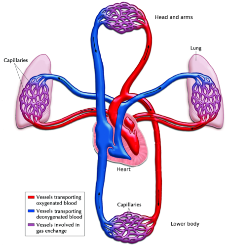
Use the diagram above to draw a circular diagram in the space provided to show how blood travels through the circulatory system (composed of two systems).
Your circular diagram will form a complete circle.
There is a difference between a flow chart and a circular diagram: a flow chart shows a process from beginning to end and arrows start at one point and end at another. A circular diagram shows a process that occurs over and over again, which forms a cycle.
Add arrows to show the direction the process occurs in.
Learner-dependent answer
A flow chart could look like the one below. Perhaps let your learners try it themselves first and then draw one on the board. Do not just draw it on the board for them to copy - they must first try it themselves.
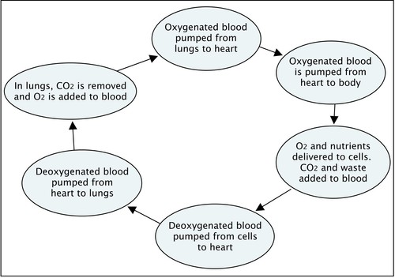
You can find out lots more online by visiting the links provided in theVisit boxes. Be curious and discover the possibilities!
A video on the circulatory system.
Health issues involving the circulatory system
blood pressure
deprived
rupture
Common diseases of the circulatory system include:
High Blood Pressure: This occurs when the force with which the blood pushes against the walls of the blood vessels is too high and can cause damage to the capillaries and several organs.
Heart Attacks: Occur when a narrowing or blood clot develops in one of the blood vessels that supplies the heart muscle with blood. If the narrowing or blood clot is big enough it can stop the blood flow to the heart muscle and can stop the heart from pumping which is called a heart attack. The person can die.
Strokes: Occur when cells in your brain are deprived of oxygen. This often occurs as a result of a blockage in the blood vessels leading to the brain, or when one of these vessels rupture (break or burst open).
The respiratory system
breathing
exhale
inhale
Closely linked to the circulatory system is the respiratory system. The circulatory system maintains the circulation of blood in the body while the respiratory system deals with the exchange of gases in your body.
Purpose of the respiratory system
The respiratory system is responsible for supplying the body's cells with oxygen and for removing carbon dioxide.
All animals have a respiratory system: fish have gills, frogs use their skin and lungs, birds have air sacs and insects breathe through small openings in their exoskeleton called spiracles.
Components of the respiratory system:
alveoli
bronchi
cilia
diaphragm
lungs
mucus
pharynx
trachea
Various organs play a vital role in the respiratory system.
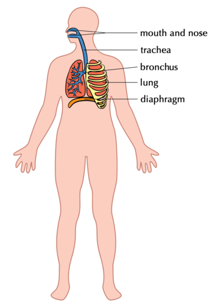A diagram of the structures that make up the respiratory system
1. Mouth and nose
Oxygen rich air enters the body through the mouth and nose where it is warmed.
2. Trachea (also called the windpipe)
The trachea is a tube that enters the chest and allows air to flow from the mouth into the bronchi and from there into the lungs. It is kept open by cartilage rings. When dust particles and germs in the air enter the trachea during inhalation, the mucus lining the trachea traps these particles and the cilia work together to move them out of the body. When you sneeze or cough you expel the mucus and foreign particles from your body.
A sneeze travels at more than 160 km/hour.
3. Bronchi
The trachea splits into two air tubes, called bronchi that connect to each of the lungs. These tubes divide even further into smaller and smaller tubes that connect with the tiny air bags (alveoli) of the lungs.
4. Lungs
The main organs of the respiratory system are the lungs. The tiny alveoli or air bags in the lung are surrounded by small capillaries where gaseous exchange takes place.
Using a patient's own stem cells, surgeons were able to develop and transplant the first human trachea in 2008.
5. Diaphragm
This dome shaped muscle below the lungs enables you to breathe. When it contracts, it moves downwards and your lungs fill with air. When it relaxes again it moves upwards and forces the air out of your lungs. This is the main muscle used for breathing.
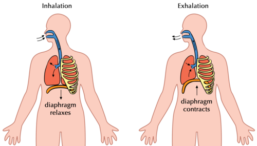This diagram helps us to understand how breathing occurs showing how the diaphragm contracts and relaxes.
Main processes in the respiratory system
Three distinct processes occur in the respiratory system:
Breathing occurs when we take oxygen into the body (lungs) and push carbon dioxide out of the body. Breathing therefore occurs in two phases:
Inhalation - drawing air in
Exhalation - pushing air out
Gaseous exchange takes place at two locations by a process called diffusion:
in the alveoli, oxygen diffuses into the blood from the lungs and carbon dioxide diffuses from the blood back into the lungs
at the body tissues oxygen diffuses from the blood into the cells and carbon dioxide from the cells diffuses into the blood
Cellular respiration occurs within the mitochondria of cells to release the chemical energy in food.
People often confuse respiration with breathing. Breathing is taking air into the body through the lungs. Respiration or cellular respiration takes place inside the cells to release energy when oxygen is combined with glucose and other nutrients.
The average yawn lasts about 6 seconds. But why do we yawn? The most common reason is that when you are tired, you do not breathe as deeply, so yawning helps us bring more oxygen into the blood.
Health issues involving the respiratory system
Some common health issues of the respiratory system are:
Asthma: caused by allergies that inflame and narrow the airways
Lung cancer: a disease that mostly results from smoking or severe air pollution
Bronchitis: swelling of the lining of the bronchi due to infection which causes coughing and makes it difficult to get air into the lungs
Pneumonia: an infection in the lungs where the alveoli fill with fluid
TB (Tuberculosis): an infectious disease caused by the bacteria, Mycobacterium
All the movements that your body performs rely on a system of muscles, tendons, ligaments, bones and joints that work together. These are the components of your musculoskeletal system.
Purpose of the musculoskeletal system
Muscle tissue is responsible for producing movement in the body, however muscles need to be attached to a frame structure to produce movement.
The bones of the skeleton provide a frame for muscles to attach to, so that movement is possible. The skeleton also protects the body, especially the soft, fragile organs like the heart, lungs and brain.
Components of the musculoskeletal system
joint
contract
cartilage
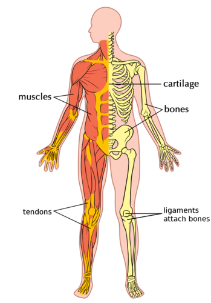The components of the musculoskeletal system help bring about movement.
The components of the musculoskeletal system include the following:
1. Muscles
Muscles allow us to move because they are able to contract (become shorter) and relax (become longer).
A video on muscle contraction and relaxation in the arm.
The muscle that moves the fastest in your body is the muscle that controls your eyelids! There is a reason why we use the phrase "in the blink of an eye" to mean very fast!
2. Bones
Bones provide support and help to form the shape of the body. The place where bones meet is called a joint - think of your knee or elbow joint, or your finger and toe joints.
Babies are born with 305 bones while adults only have 206 bones. As babies grow into adults, many smaller bones fuse together to form bigger bones.
3. Cartilage
Cartilage is stiff yet flexible and is found between bones in joints and between the ribs and breastbone (as indicated in the diagram). It also forms the ears, nose and bronchial tubes, and forms discs between the bones of the spinal column.
4. Tendons
Your muscles attach to the bone with strong cords called tendons. You can feel some of the tendons in your body, for example behind your ankle (called the Achilles tendon).
5. Ligaments
Ligaments occur between bones at joints and hold bones together within the joint. Ligaments are extremely strong.
Main processes in the musculoskeletal system
bowing
locomotion
self-propulsion
We can move our entire bodies from one place to another through self-propulsion. This is called locomotion. Locomotion is different to movement. Movement is the change in shape, direction, position or size of a part of the body. Animals show movement and locomotion. What about plants? Do you think plants show movement and locomotion?
Ask your learners this question to get their answers. The answer is that plants only have movement as they are able to change shape and grow, and even change direction in response to a light or water source, but they are rooted to one place - they cannot locomote (move from place to place). Encourage learners to take notes on this discussion either in a separate notebook or in the margins of the workbook.
You use 200 muscles when taking only one step!
Locomotion and movement are made possible through the contraction and relaxation of muscles. Muscles are stimulated by nerves to contract.
Health issues involving the musculoskeletal system
Common disorders of the musculoskeletal system include:
Rickets: This disorder is caused by a lack of vitamin D, calcium or phosphate which results in soft, weak bones. A typical symptom in children who have rickets is a bowing (bending outwards) of the bones of the legs.
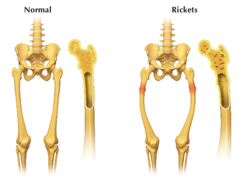Can you see how the shape of the bones changes when a person has rickets?
Arthritis: This is a condition where the joints in the body become inflamed, painful and swollen. The cartilage between the joints breaks down causing the bones to rub against each other which is very painful.
Osteoporosis: This occurs when the bone tissue becomes brittle, thin and spongy. These fragile bones can break easily, and they start to crumble and collapse. Although osteoporosis is common in older people (especially older women), teenagers and young adults may also develop it.
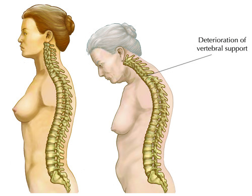As this woman got older, she developed osteoporosis causing her vertebral column to crumble and collapse and so she now stoops over.
An alternative to doing the summary diagram with the human body outline at the end of this system, is to get learners to produce a mind map. It is important that learners are exposed to and get experience with different techniques to summarise information and help them study or learn. This is crucial for later grades. Below is an example of a mind map that a learner may construct:
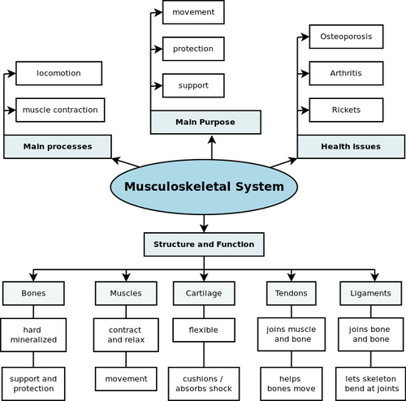
The excretory system
bladder
excretion
kidney
metabolic waste products
metabolise
toxic
urea
ureter
urethra
urinate
We will now be looking at the excretory system. This is often confused with egestion, which we previously learned about.
Differentiating between excretion and egestion
Do you remember learning about the difference between excretion and egestion? Explain what you understand the difference between these terms are.
Egestion is...
Egestion is the removal of undigested material (solid waste) from the digestive tract via the anus.
Excretion is ...
Excretion is the removal of metabolic waste products from the metabolism which takes place in cells in the form of urine and sweat and exhalation
Purpose of the excretory system
Our cells use oxygen and nutrients to function and in the process also produce various metabolic waste products including:
urea: a substance that is formed when protein is broken down in the liver
carbon dioxide: a by-product of cellular respiration
The organs of the excretory system are responsible for removing these harmful metabolic waste products from the blood so that they do not build up to high concentrations. But, in the process, they have to retain the nutrients and water for the body to function. One of the main functions of the excretory system is to prevent too much or too little water in the body.
Components of the excretory system
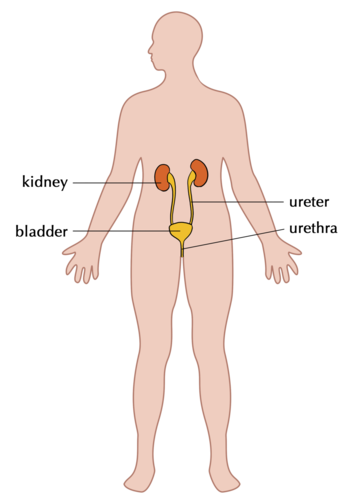The excretory system is responsible for removing metabolic waste products from the blood
We already know that the lungs excrete carbon dioxide (CO2) when you exhale. Another organ that excretes waste is the skin. When you sweat, your skin excretes excess water, salts and a small percentage of urea. In this section, however, we will focus on the excretory system to remove metabolic waste from our blood in the form of urine.
To do this, the body uses the urinary system that consists of four main parts.
1. Kidneys
The kidneys filter all the blood in your body to remove urea from the blood. You have two kidneys, each about the size of your fist and bean shaped. Your kidneys produce urine which is a combination of excess water and waste products.
The first kidney transplant occurred in 1954.
2. Ureters
There are two ureters (thin tubes) which connect each kidney with the bladder and carry the urine from the kidney to the bladder.
3. Bladder
The bladder is a balloon-like organ that collects the urine before excreting it during urination.
4. Urethra
The urethra is a tube that connects the bladder to the outside of the human body through which the urine is excreted.
Main processes in the excretory system
There are four main processes discussed below.
1. Filtration: All the blood in the body passes through the kidneys as part of the circulatory system. The kidneys filter the blood to remove unwanted minerals and urea, and also excess water. Some water is removed so that the metabolic waste products can be excreted in solution in the liquid urine.
Your kidneys filter about 125 ml of blood every minute! Since you have about 7 to 8 litres of blood in your body, all your blood gets filtered 20 to 25 times per day through your kidneys!
2. Absorption: Once the blood is filtered by the kidneys, the substances that the body needs are re-absorbed back into the blood so that they are not lost in the urine.
3. Diffusion: The substances are transported into and out of the specialised cells of the kidney through the process of diffusion.
4. Excretion: The kidneys funnel the liquid urine through the ureters to the bladder where it is stored. When the bladder has filled up, it uses muscles to force the urine out of the body through the urethra. This is called excretion.
On average, your kidneys produce 1.5 liters of urine each day.
Health issues involving the excretory system
antibiotic
infection
Common diseases of the excretory system include:
Kidney Failure: When this happens the kidney loses its ability to properly filter and remove metabolic waste which allows this waste to build up in the body. This is very harmful and may be fatal. In such cases the patient needs to undergo very regular kidney dialysis. Dialysis involves using a machine which filters the blood for the patient to remove waste products.
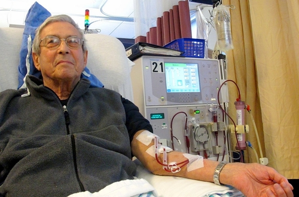A patient receiving dialysis to filter his blood because the kidneys are not working as they should.
Bladder infection: This is one of the most common infections in women but is quite rare in men. Bacteria can enter the bladder and cause an infection. This causes swelling and pain when urinating.
Kidney Stones: Kidney stones form when fluid intake is too low, resulting in the concentration of solutes (salts and minerals) in the kidney becoming too high. This can result in a small crystal (stone) forming. The kidney stone may stay in the kidney or move down the ureter to be excreted in the urine. A larger stone may however cause severe pain along the urinary tract and may even get stuck, blocking the flow of urine and causing severe pain or bleeding.
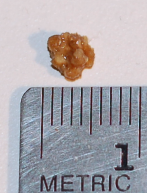A kidney stone which is about 4.5 mm in diameter.
A summary video of the excretory system.
The nervous system
brain
conduct
impulse
nerve
neuron
stimulus
transmit
vision
A fun idea is to play the song of the nervous system in the visit box as learners come into the class and sit down.
A song about the nervous system.
Purpose of the nervous system
Our nervous system is a complex network that transmits nerve impulses between different parts of the body. The nerves in our body receive stimuli from inside the body or from the environment (from the ears, eyes, skin or tongue for instance). These are turned into impulses to the brain and spinal cord.
Stimuli is the plural form of the word stimulus.
Components of the nervous system
The nervous system consists of various parts.
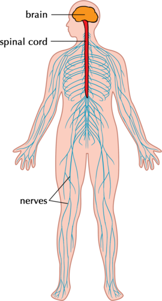
1. Nerves
Nerves are the long fibres which transmit messages from the brain and spinal cord to the rest of the body and back. Each nerve is actually an enclosed bundle of nerve cells, called neurons. The nerves work together to carry messages throughout the body. They make up the nerve tissue in the nervous system.
Nerve impulses travel to and from the brain at 274 km per hour.
2. Brain
Your brain is located inside your skull. The brain is part of your central nervous system and sends messages to the rest of your body. There are different areas in the brain that have different functions. All these different areas also communicate with each other.
Your brain makes up less than 2% of your total body weight, yet it uses 20% of your body's energy!
3. Spinal cord
The spinal cord runs from the brain through your spine, protected by your vertebral column. The spinal cord is a bundle of nervous tissue and other support cells. Together with the brain, the spinal cord also forms part of your central nervous system.
4. Sensory organs
We have mentioned that there is a central nervous system (made up of the brain and spinal cord). The second part of the nervous system within our bodies is the peripheral nervous system.
"Peripheral" means on the outside. So the peripheral nervous system is on the outside of the central nervous system.
The peripheral nervous system connects the central nervous system to the muscles and organs. Various sensory organs are responsible for collecting information and sending it via sensory nerves to the central nervous system.
Our sensory organs are our:
ears
nose
eyes
skin
tongue
The skin is the largest organ in the human body.
Main processes in the nervous system
auditory
degenerative
optic
The nervous system is responsible for key processes in the body. These are discussed next.
Sending and receiving impulses: Nerve cells in the brain send and receive multiple messages from multiple sources at any given moment. These are transmitted as electrical impulses.
The amount of electricity used by the brain to send and receive messages can power the light in your refrigerator!
The central nervous system interprets these signals and this is how we sense the world around us. These processes are:
Hearing: In the ear, sound waves are transformed into electrical signals that travel along the auditory nerve to the brain. This allows us to understand what we are hearing.
Seeing: Seeing and understanding what you see are complex processes. Light enters your eye and stimulates specialised cells within your eye. These cells transmit signals to the brain along the optic nerve, where they are interpreted as sight.
Feeling: The skin allows us to feel and experience the world around us through touch. Millions of nerve endings in the skin, called receptors, cover the skin, muscles, bones and joints, as well as internal organs and the circulatory system. These receptors respond to pressure, pain, temperature and movement.
Tasting: Taste buds in your tongue and parts of your mouth can distinguish between the different flavours: sweet, sour, bitter, salty. These receptors work very closely with the receptors in the nose. Together the taste and odour of food is sent to the brain where it is processed and interpreted.
Smelling: Nerve cells in the lining of your nose respond to molecules in the air. They send messages to the brain which interprets the smell accordingly and recognises any one of about 10 000 different smells!
Regulating: An important part of the nervous system is to maintain a balance within the human body. This includes regulating our body temperature. Our bodies need to be kept at about 37°C to work effectively. If the body is too hot the brain might try and cool the body through increased sweating. If you are very cold, your body will start to shiver to generate heat energy. These responses to changes in body temperature are controlled by your nervous system.
Health issues involving the nervous system
Trauma and injuries to brain and spinal cord: Any damage to the brain or spinal cord can have devastating effects on the human body. For example, people who break their necks in an accident, often damage their spinal cord. This prevents the brain from sending and receiving messages to the body and the person can become paralysed.
Stroke: If blood flow to the brain is stopped, brain cells begin to die, even after just a few minutes without blood or oxygen. This can lead to a stroke where a part of the brain function is lost.
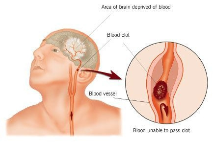When the brain is deprived of blood and oxygen due to a blood clot, the person may suffer from a stroke.
Degenerative disorders: There are several problems associated with the nervous system that cause a gradual loss of function over time (degenerative). These conditions include Alzheimer's Disease, Parkinson's Disease and Multiple Sclerosis.
Mental health problems: Examples include depression, anxiety disorder and personality disorders.
Sensory organ problems: We have discussed the various sensory organs that are associated with the nervous system. These organs can also have problems, such as:
Deafness
Blindness
Short sightedness
Effects of drug and alcohol on the brain: Different types of drugs target different areas in the brain and it is mostly the brain's reaction(s) that make people want to take drugs and/or alcohol.
Teachers may want to use this opportunity to discuss the topic of drug abuse. If you would like to explain some of the effects of drugs and alcohol on the brain to your learners, here are some:
Drugs like methamphetamines (tik) and cocaine make the user feel a huge sense of reward causing these drugs to become addictive.
People also use drugs as a stimulant - using caffeine, cocaine and amphetamines to speed up their reactions.
Alcohol and marijuana (dagga) have the opposite effect on the brain and slow it down - these are called sedatives and hypnotics.
Hallucinogens like LSD and Ecstasy, and also more recently the drugs Woonga and Nyaope, make you see things that are not real.
Morphine and heroin are used to relieve severe pain and when misused slow down the user's reactions.
It may be useful to explain to learners that the same drug may be useful and beneficial when used properly and at the correct dosage, or abused when it is used inappropriately, or in excessive amounts.
Alcohol and drug abuse can cause irreversible brain damage, a loss of memory, decreased learning capability, an increased risk of strokes and heart attacks, and a variety of emotional and mental health problems.
In humans, as in other eukaryotic organisms, the main purpose of the reproductive system is to produce sex cells to ensure the continuation of the species.
Components of the reproductive system
We will be looking at the reproductive organs in more detail in the next chapter. For now, let's get an overview of the main components in the reproductive system.
The female (left) and male (right) reproductive organs differ:
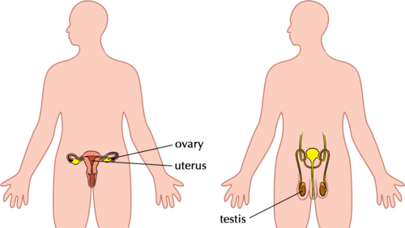
1. Ovaries
The ovaries are located inside the female's body in the lower abdomen and produce mature egg cells (ova).
The largest cell in the human body is the ovum (egg cell) and the smallest cell is the sperm cell.
2. Uterus
The uterus (also known as the womb) is present in females. It has a thick lining and muscular wall. This is where a fertilised egg will implant and develop during pregnancy.
Some of the strongest muscles in the female body are found in the uterus! Can you think of reasons why this is?
The muscles in the uterus are some of the strongest in the human body. This is because they need to be able to grow and contract to contain a growing foetus and to push the foetus out during labour.
3. Testes
The sex organs in males are located in the scrotum, a pouch of skin that hangs between the legs. During puberty the testes start to produce sperm cells.
Main processes in the reproductive system
ejaculation
fertilization
gamete cells
ovulation
puberty
sexual intercourse
During sexual reproduction, the egg and sperm have to combine to form a new individual. Let's do an activity to find out about the main processes in the reproductive system.
As this will be dealt with in the next chapter, a simple activity can be done now for learners to look up these new terms and write down definitions.
Defining the main processes involved in reproduction
INSTRUCTIONS :
Below is a list of the main processes involved in the reproductive system.
Look up each term, either in your dictionary or on the internet and write a brief description on the lines provided.
The first three have been done for you.
Growth
Growth is the increase in size and mass of an organism as it develops over time.
Cell division
Cell division is the process when a parent cell divides into two daughter cells. In the reproductive system, cell division occurs within the ovaries and testes to produce gametes (sperm and egg cells)
Maturation
Maturation is the process of becoming mature. In humans, this refers to puberty where sexual organs mature so that they are able to reproduce.
Copulation
Copulation is the act of sexual intercourse (procreation) when a man inserts his penis into a woman's vagina.
Ejaculation
This is the release of the sperm into the woman's cervix during sexual intercourse.
Ovulation
This is when a mature ovum (female egg cell) is released from the ovary once a month.
Menstruation
If the ovum is not fertilised, the lining of the uterus is shed during menstruation.
Fertilisation
When a male (sperm cell) and female (egg cell) gamete fuse (come together) during copulation.
Implantation
In the reproductive system, this refers to the process when the fertilised egg implants (attaches firmly into) the uterus lining.
Health issues involving the reproductive system
Infertility: About 10% of heterosexual couples have problems falling pregnant and may even be completely unable to sexually reproduce. This is infertility and it affects both men and women.
Foetal Alcohol Syndrome: When a pregnant mother drinks alcohol during her pregnancy, the alcohol may cause serious birth defects in the unborn baby. This will affect the child throughout their entire life and in most cases cannot be reversed.
South Africa has the highest percentage of Foetal Alcohol Syndrome cases in the world, especially in the Western Cape. This is very tragic and programmes are being implemented to educate people on the dangers of drinking during pregnancy.
Sexually STDs): Many life-threatening diseases such as HIV/AIDS, syphilis and gonorrhoea can be transferred during sexual intercourse.
There are many complex systems functioning in our bodies.
Each system has very specific organs and tissues that are key components in making the system function optimally.
Different processes take place that are dependent on the key components in each system.
There are various health issues that affect the systems of the body and that can often be prevented with a healthy lifestyle and wise (informed) life choices.
Concept map
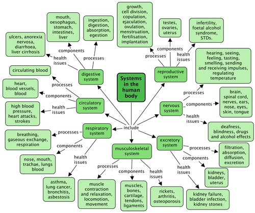
Revision questions
What does digestion mean? [4 marks]
Breaking food into small soluble parts that can be transported in the blood and absorbed by the cells.
List the four main processes involved in the digestive system. [4 marks]
Ingestion, Digestion, Absorption and Egestion.
Describe the different components of the digestive system and their function. [15 marks]
Mouth and oesophagus: food is chewed in the mouth and passed through the oesophagus to the stomach
Stomach: bolus enters the stomach where it is mechanically digested through churning and chemically digested by gastric juices in the stomach.
Small intestine: most of the chemical digestion and absorption takes place in the small intestine where food is chemically broken into tiny pieces to be absorbed by the walls of the small intestine and transported in the blood to the cells.
Large intestine: water that is left after digestion in the small intestines are absorbed in the large intestine and indigestible fibre is left to pass through and faeces are formed.
Rectum and anus: undigested fibre and substances (faeces) passes from the large intestine to the rectum and anus from where it is egested.
Diarrhoea is can be very dangerous in babies. Why do you think this is so? How it can be prevented? [3 marks]
Babies who have diarrhoea lose large quantities of undigested nutrients and water in this way. Their bodies quickly dehydrate and they become too listless to feed or drink, dehydrating their bodies even further. If they do not get medical attention they may die. This can be prevented by sterilising their bottles and feeding equipment to prevent the transfer of the bacteria that cause diarrhoea.
Distinguish between inhalation and exhalation. [2 marks]
Is carbon dioxide in your body excreted or egested? Explain why you say so. [3 marks]
Egestion is the removal of undigested substances and fibre from the body; Excretion is the removal of waste products of metabolism, including cellular respiration. Since carbon dioxide is a waste product of cellular respiration it is excreted.
Draw a simple diagram to show how blood is circulated around the body in a closed system. [10 marks]
Learner-dependent answer
What is the difference between breathing and respiration? [5 marks]
Breathing: taking air into and out of the body through the mouth, trachea, bronchi and lungs.
Respiration: occurs at the cellular level when oxygen is taken into the cells where it is used to release energy from food; carbon dioxide is a by-product of this and it is returned to the blood and sent to the lungs to be exhaled.
Give two parts of your musculoskeletal system you use when you have to climb stairs. [3 marks]
Muscles contract and relax to move the bones at the joints and allow for locomotion. Tendons and ligaments are also used.
What are the functions of the bones in the skeleton? [2 marks]
Bones are an attachment place for muscles and provide protection and support.
Drugs and alcohol have various negative effects on the body. List at least 3. [3 marks]
Learners were exposed to various negative effects and should refer to these in this answer. These may include any of the following among others:
Dependence on the drug / alcohol make it almost impossible to withstand cravings and the addict will do almost anything to get money to buy more.
Organ damage and ultimately organ failure and death.
Reduced brain activity and harm to brain cells, leading to seizures, impaired vision and motor coordination, blackouts, etc.
If using intravenously the user stands a big chance of infection by HIV and other infectious diseases.
Stimulant drugs like nicotine and cocaine affect the respiratory system.
Smoking also affect almost every other system in the body - vascular, skin, etc
etc
Explain why it is so dangerous for a pregnant woman to drink alcohol during pregnancy. [2 marks]
If a pregnant woman used alcohol during the pregnancy, this may cause deficiencies, Foetal Alcohol Syndrome and physical and central nervous system abnormalities in the baby. These effects are permanent and irreversible.


{kind=link}